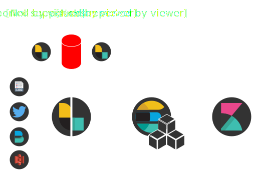
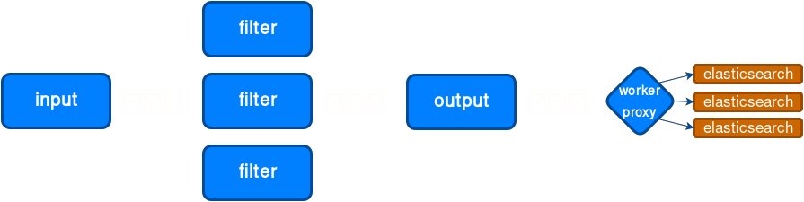
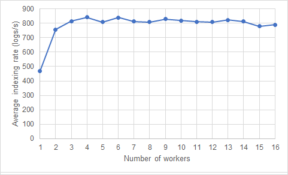
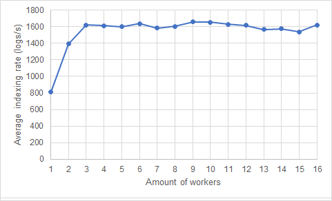
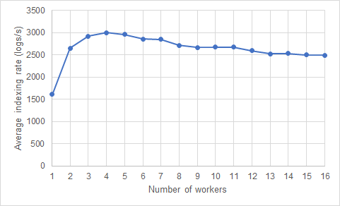
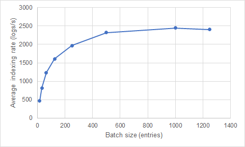
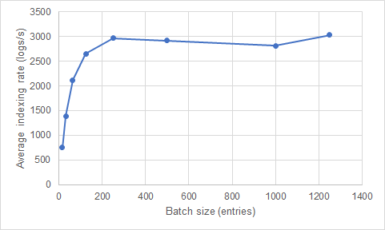
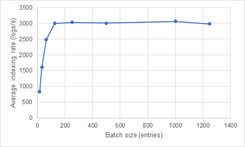

The ELK Stack
Santiago Javier Calcagno
Karlsruhe Institute of Technology
Seminar „Big Data Tools“
What is the ELK Elastic Stack?1
Logstash
Data processing
Elasticsearch
Search engine
Kibana
Visualization tool
General architecture

Scaling the stack2
Use cases
More use cases here. 3
Evolution of the logstash pipeline4
Logstash pipeline, versions 1.2.2 to 2.1
Logstash pipeline, version 2.2
Logstash pipeline, versions 5.0 and newer
Goal
Analyze how the number of pipeline workers and the batch size affect the indexing rate (in a specific system).
- Intel® Core™ i5-2520M
- 16GB RAM DDR3-1866
- Samsung® EVO™ 250GiB mSATA SSD
- Arch Linux, kernel 4.8.13-1
- Elastic stack version 5.1
Tests and tools
for w in "${W_VALUES[@]}"
do
for b in "${B_VALUES[@]}"
do
sed -i -e "s/-w [0-9]*/-w $w/" docker-compose.yml
sed -i -e "s/-b [0-9]*/-b $b/" docker-compose.yml
docker-compose up &
DOCKER_PID=$!
sh ./gatherdata.sh &
GATHER_PID=$!
python jlog.py
kill $GATHER_PID &&
curl -s -XDELETE 'http://localhost:9200/_all'
kill $DOCKER_PID
done
done
run.sh
s.connect((TCP_IP, TCP_PORT))
for _ in range(0, MAX_LOGS):
method = random.choice(methods)
jlog = {
'ip_src' : random.choice(ip_srcs),
'websv' : random.choice(websvs),
'method' : method,
'query' : random.choice(gets) if method == 'GET'
else random.choice(posts),
'protocol' : random.choice(protocols),
'response' : random.choice(responses),
'user' : ''.join(random.choice(
string.ascii_letters + string.digits)
for _ in range(6)),
'usertype' : random.choice(usertypes),
'user_ip' : ".".join(map(str, (random.randint(0, 255)
for _ in range(4)))),
}
msg = json.dumps(jlog) + '\n'
s.send(msg.encode('utf-8'))
s.close()
jlog.py
Results
Batch size comparison
Output workers comparison
Some special cases

Batch size 16

Batch size 32

Batch size 125

1 worker

2 workers

4 workers
Conclusion
- For this system, w ~ 4 and b ~ 150
- Effect of message queue and more Elasticsearch nodes
- Generic testbed for more complex scenarios
- Try it yourself!